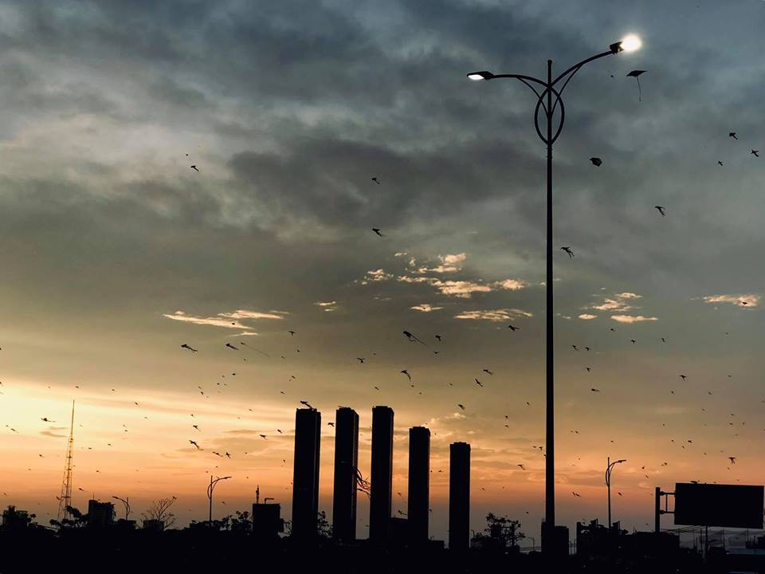
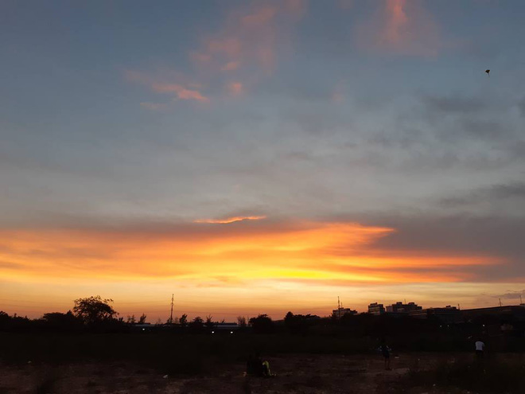

Ở Sài Gòn, người ta vội vàng quá nên chẳng mấy ai để ý đến những buổi chiều hoàng hôn đẹp "nức nở"
Cái thời tiết ngột ngạt và nóng bức của Sài Gòn dường như dịu lại trước bầu trời đổ bóng mát rượi chiều hoàng hôn buông lơi.
Những ngày này, Sài Gòn đang “oằn mình” chống đỡ dưới cái nắng như thiêu như đốt, đỉnh điểm vào buổi trưa, mức nhiệt có thể lên tới 35 - 38 độ C.
Bất chấp thời tiết oi ả, dòng người khắp mọi nẻo vẫn sôi động và bản thân Sài Gòn cũng thế, thôi thúc và chạy theo sinh hoạt của hàng triệu người dân. Có chăng giữa dòng đời chảy trôi nhộn nhịp, thiên nhiên ban tặng cho Sài Gòn một buổi chiều đủng đỉnh: Hoàng hôn buông trên lòng người hừng hực vì cái nóng, ánh sáng leo lắt xoa dịu cái ngột ngạt từ trong ra ngoài.
Đó là bầu trời Sài Gòn mấy hôm nay mà dân tình đang suýt xoa khen ngợi và chia sẻ “rần rần” trên MXH. Mở đầu chính là bức ảnh của nhiếp ảnh gia Tý Nguyễn, anh đã chia sẻ trong một hội nhóm trên Facebook bức ảnh chụp bầu trời cắt qua cầu Sài Gòn chiều ngày 14/04.

Sau đó, các thành viên trong nhóm tiếp tục chia sẻ những khoảnh khắc họ đã "bắt" được của bầu trời những ngày gần đây: “50 sắc thái”, màu sắc huyền ảo bao trùm lên cả thành phố trong những ngày này.
Khi mặt trời mới xuống, ánh sáng chấp chới giữa vàng, trắng và cam. Một bóng đen mờ đổ xuống thành phố của những giấc mơ khởi nghiệp.
Tác giả Huỳnh Nhật Minh đã viết về thời khắc này trong tác phẩm "Viết cho những ngày mùa hạ xanh xao" của anh như sau: "Em bảo với tôi về những con đường rực lửa, cánh phượng hồng trải gót chân đi, tia nắng chói chang thiêu đốt thêm những nỗi buồn sắp sửa chia xa... Mùa hạ! Em bảo với tôi về tà áo trắng ngần ngại điều chi không nói, về ánh mắt buồn long lanh ướt, về tiếng ve chảy dài theo những ân tình trên dòng lưu bút bâng khuâng..."
Mùa hạ tháng Tư cơ nhỡ như hoàng hôn lúc 5 rưỡi, 6 giờ kém. Còn biết bao kỷ niệm, còn biết bao dở dang, còn biết bao lời chưa nói...
Tiếc thay cho những người con Sài Gòn vì quá vội vã mà đôi khi quên mất thưởng thức cái vẻ đẹp thiên nhiên gần gũi này. Khi cái nóng chưa đạt đến đỉnh điểm và mùa mưa còn xa xôi, thứ ảnh sáng mờ ảo loang lổ giữa cam, hồng, tím và đỏ vuốt ve nhịp đồng hồ và dòng người nô nức.
Thời khắc đẹp nhất của hoàng hôn Sài Gòn có lẽ là xung quanh khoảng 6 giờ chiều, khi ấy nắng đã xuống hẳn và không còn gay gắt, bầu trời đỏ chín nhưng dịu nhẹ, chìm trên cái nền tối vời vợi thinh không.
Lòng người khi ấy nhẹ tênh đến từng đường nét, giá mà lúc nào cũng như lúc này: Có một nhịp để nghỉ, có một phút để thảnh thơi trước bề bộn công việc và những cuộc chơi. Chiều muộn đem cho con người ta những miên man vụn vặt, ấy mà chẳng có ai gom góp lại những hư tàn.
Một ngày hết, ánh sáng rời đi nhường chỗ cho màn đêm đèn điện chói loà. Nhưng trong khoảng lặng chiều tà này, chút bóng tối len lỏi giữa ánh sáng Sài Gòn, khi chưa bị đèn điện và đèn xe chấm phá, vẫn còn đầy thổn thức và trần trụi.
Nắng lại lên, ánh dương mai sẽ quay trở lại, như những người ở Sài Gòn: Đến và Đi. Đời người không dài, lại càng không hoàn hảo, mỗi ngày bèn tự hỏi: "Nếu khoảnh khắc nào chúng ta cũng bỏ lỡ, thì đợi chờ đến bao giờ?"